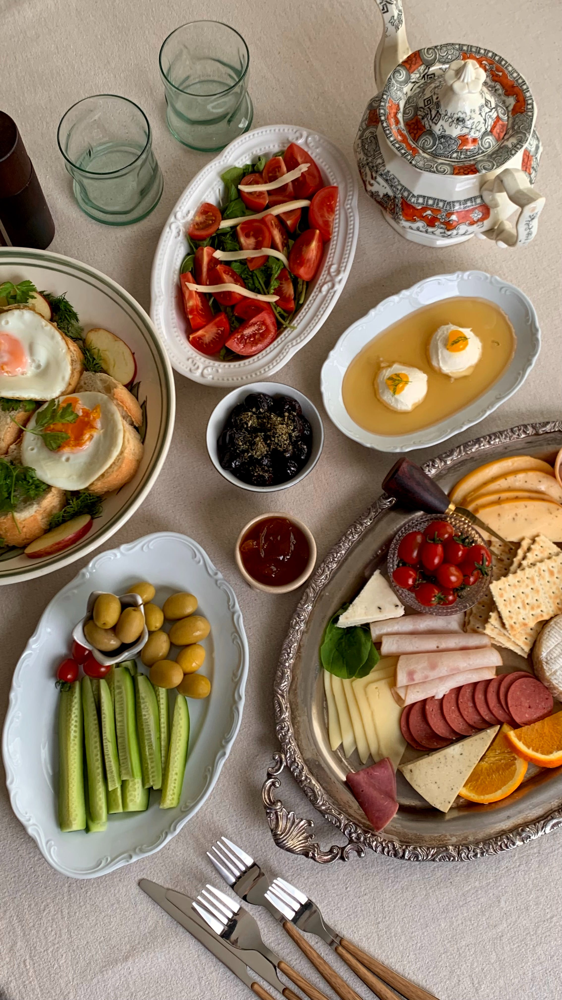
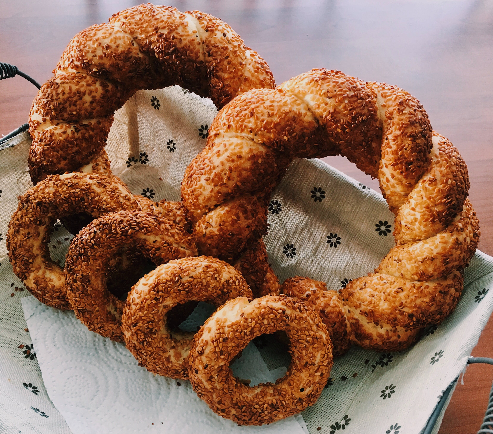
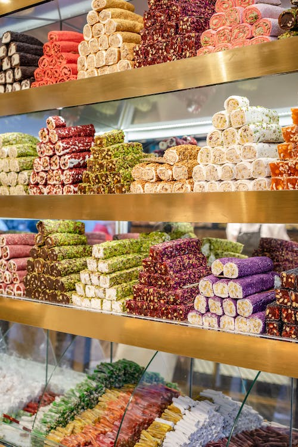
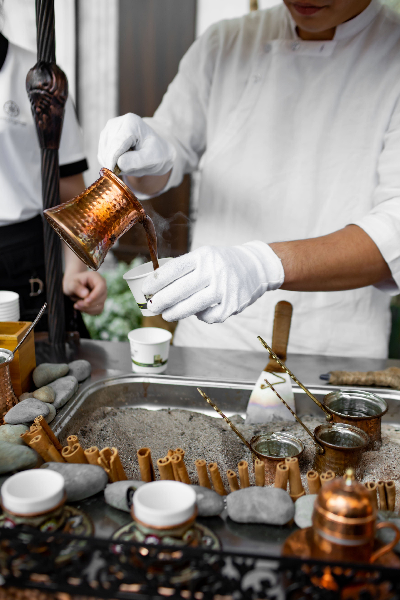

| Cappadocia | Locations | Food | Facts |
|---|
Turkey is well-known for its delicious, rich cuisine made with fresh ingredients. You can find food of the same quality wherever you go in Turkey, not just in Cappadocia. I love Turkish food a lot, and I've even started looking up recipes and cooking it at home. Turkish food It has the same main flavors as Arabic food, and because I am Arab, this is what I grew up eating and enjoying. When I cook at home, I always turn to Turkish cuisine.If you want to try making Turkish cuisine at home, click here; it is a great resource for beginners. However, trying Turkish food in Turkey differs from trying it in another country, which is why you should try restaurants in Cappadocia. Here are The Top Ten Restaurants in Cappadocia.
Breakfast is the most significant meal of the day for Turkish people. As a result, a traditional Turkish breakfast, known as "kahvalti," is a pleasure to enjoy..

Simit are really tasty sesame-crusted yeast dough bread circles. They have a bagels-like appearance. Street vendors sell freshly made simit out of little carts starting in the wee hours of the morning.
It is a candy made from a syrup made of sugar and gelatinized starch. It is typically served with Turkish coffee.
